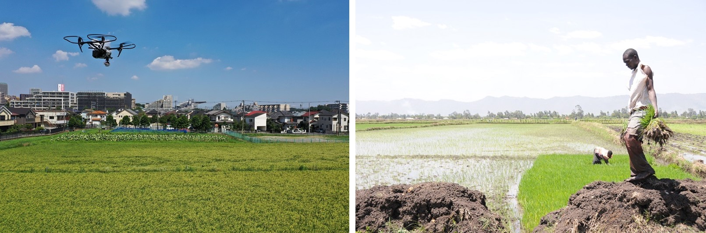
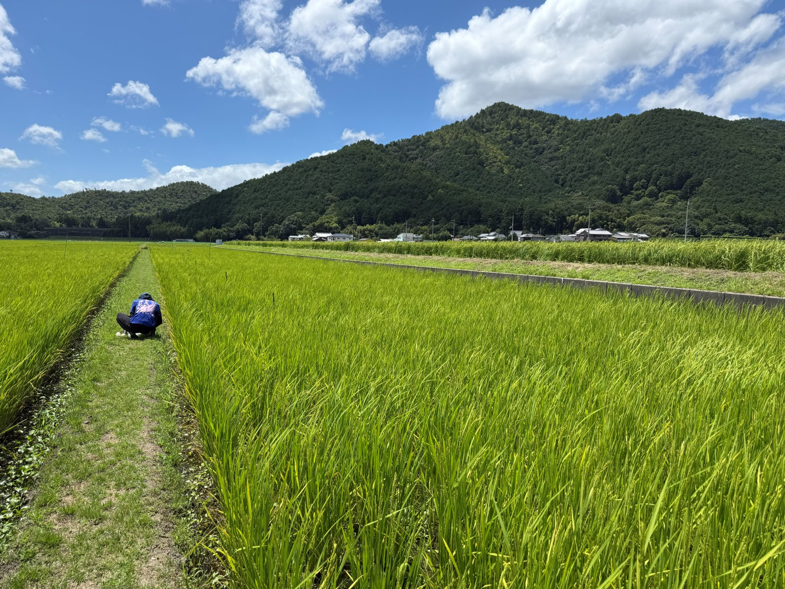
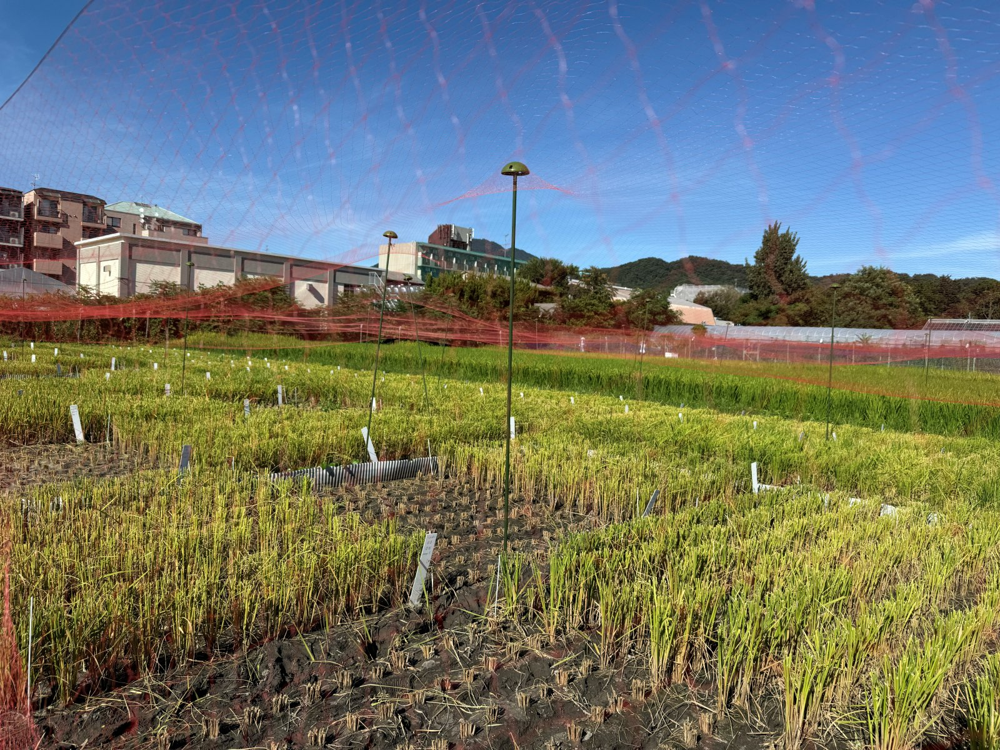
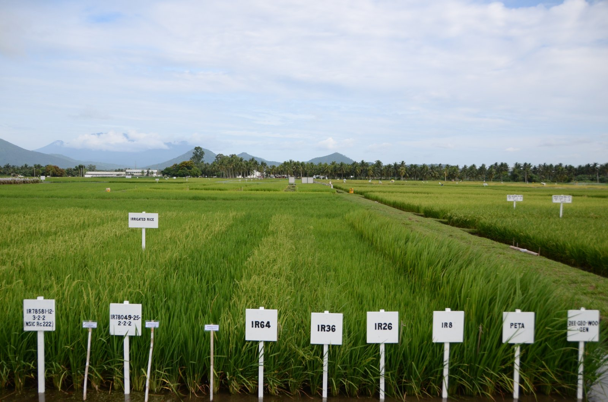

研究内容
作物学とは
作物の生産性は「どのような遺伝子型の作物を」「どのような環境で」「どのように管理して」栽培するかによって大きく変わります。そのため、これらの要因を包括的に理解し、生産現場の問題点を抽出して解明に取り組む必要があります。
イネなどの主要作物を対象に、さまざまな環境条件で生産性を高める技術の開発を目指しています。国内だけでなく、アジアやアフリカの開発途上国などでも実際に栽培を行いながら、現場の問題点の抽出と克服に取り組んでいます。
開発途上国における持続的栽培技術体系の開発

開発途上国では人口増加に伴って食料需要が急増していますが、作物の生産性は依然として低い地域が多く残されています。生産性を制限する要因は、施肥法や播種法などの基本的な栽培技術、品種の能力、水や土壌などの環境条件など、地域によって多様です。
現地の生産環境と農家の実情に合わせて、作物生産性を持続的に高める栽培技術体系の開発に取り組んでいます。主な対象は、タイ、フィリピン、インドネシア、ベトナムなどの東南アジア諸国と中国で、これらの国々の研究機関や大学と連携して、イネを中心に研究を進めています。アフリカでは、ガーナ、ケニア、タンザニアの稲作現場を中心に、天水田や大規模水田など多様な環境でイネの安定多収に向けた栽培技術の確立と、育種戦略の提案を目指しています。これまでに、南米ボリビアのアルティプラノで、現地の生物資源を活かした持続的なキヌア栽培体系の開発にも取り組みました。
作物学へのデータサイエンスの応用

作物の生育や収量を画像やセンサーなどのデータから精確に評価し、栽培管理や育種に活かすための、作物学とデータサイエンスを融合した研究に取り組んでいます。対象は日本の圃場を含むさまざまな現場で、開発途上国への応用にも取り組んでいます。欧米を中心にスマート農業の技術開発が活発な一方、開発途上国での導入例はほとんどありませんが、途上国には栽培管理を適正化するだけで生産性を大幅に高める余地があり、こうした地域にも使える技術の開発を目指しています。
- ドローンや画像を用いた生育・収量の推定: ドローンやスマートフォンなどで撮影した画像から、作物の生育量や収量を非破壊で推定する技術を開発しています。モデルの開発に必要な収穫調査の労力を大きく減らすデータ収集法や、さまざまな品種・環境に使える頑健なモデルの構築にも取り組んでいます。
- 解釈できるAI・機械学習による解析: 長期の栽培試験などの大規模なデータを機械学習で解析し、収量を決める要因とその相互作用を明らかにします。精度の高さだけでなく、結果を作物学的に解釈できるモデルであることを重視しています。
- ドイツとの二国間国際共同研究: 持続可能な農業に向けた「信頼できるAI」の開発として、AIを活用した栽培管理の意思決定支援に取り組んでいます。
- 国際共同研究「リモートセンシングと解釈可能なAIによるイネ突然変異育種の高速化」（e-ASIA共同研究プログラム）: 気候変動のもとでの持続的な作物生産に向けて、タイ、インドネシア、量子科学技術研究開発機構と共同で、イネの時系列の群落画像から収量を制限する要因を解明する解釈可能なAIを開発し、遺伝解析と組み合わせて突然変異育種を加速します。画像解析や機械学習の技術を現地の研究者に移し、イネ育種の国際的なネットワークをつくることも目指しています。
低投入作物栽培技術の開発

肥料や農薬などの投入資源を減らしながら、収量を維持・向上させる栽培技術の開発に取り組んでいます。資源が限られた開発途上国の農家にとって実践しやすく、環境への負荷も小さい、持続的な作物生産を目指しています。
例えば、化学肥料や農薬、さらには有機物も投入しない「無投入」の水田では、数十年にわたって慣行栽培の7割程度の収量が維持されている事例があります。こうした水田で、灌漑水や雨水、土壌、微生物などからの養分供給とイネの生育の関係を、圃場での精密な観測とデータ解析を組み合わせて明らかにしようとしています。写真は実際の圃場での調査の様子です。
持続的多収に向けた栽培試験

作物学の基本である地道な栽培試験も、研究の柱の一つです。品種、播種や移植の時期、施肥、水管理などを組み合わせた圃場試験を行い、収量とその決まり方を丁寧に調べています。得られたデータは、栽培技術の改良だけでなく、先に述べたデータ解析やモデルの開発にも活かしています。
その一例が「再生二期作」です。一度収穫した後の株から再生する芽（ひこばえ）を育てて、もう一度収穫する栽培法で、二度目の田植えが要らないため省力的です。大規模経営や開発途上国でも使いやすい低コストな多収技術として注目されており、安定して収量を高めるための条件を調べています。写真は、再生二期作の試験圃場の様子です。
このほかにも、持続的な多収に向けて、さまざまな環境で栽培試験を重ねています。
国際イネ研究所（IRRI）との共同研究

国際イネ研究所（IRRI、フィリピン）は、1960年代に高収量品種IR8などを生み出してイネの「緑の革命」を主導した研究機関で、現在も世界のイネ研究の中心的な役割を担っています。このIRRIと共同で、イネ生産の持続性に関する研究を実施しています。
- 長期連用試験を用いた稲作の持続性の研究: 半世紀にわたり続く連作水田の試験データを解析し、収量が持続する要因を調べています。
- 炭素貯留などの持続性の研究: 稲作による土壌への炭素貯留など、環境面での持続性を評価します。
- 温暖化がイネ生産に及ぼす影響の評価: 気候変動のもとでの収量変化を予測し、評価します。
その他
上記以外にも、作物の栽培や生理に関する研究を幅広く行っています。共同研究などのご相談は 連絡先 からお願いします。